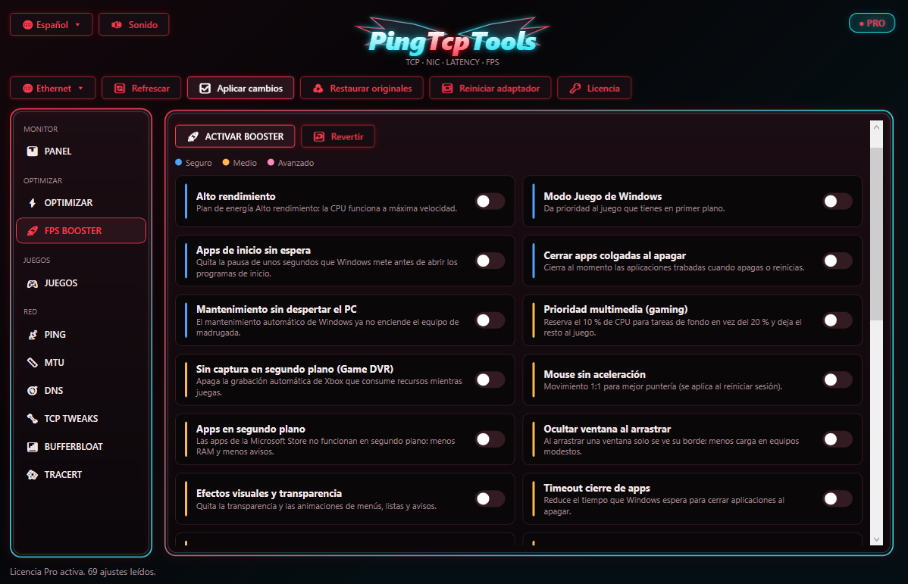

Lanzador de juegos y overlay de FPS: cómo medir FPS, CPU, GPU, RAM y ping mientras juegas
This guide is currently available in Spanish only. Use your browser’s translate option to read it in English.

Optimizar sin medir es adivinar. Para saber si un ajuste te da FPS o te baja el ping, necesitas ver los números mientras juegas. El lanzador y el overlay de PingTcpTools sirven para eso: preparar el equipo al abrir el juego y mostrar en pantalla las métricas que importan.
El lanzador de juegos
Agrega tus juegos manualmente o búscalos en tu biblioteca de Steam. Al lanzarlos desde la app, puedes activar:
- Limpiar RAM al iniciar: libera memoria en caché antes de abrir el juego. Ayuda en equipos con poca RAM (8 GB o menos) o cuando llevas muchas horas con el navegador abierto. Con RAM de sobra, la diferencia es mínima.
- Prioridad alta al juego: Windows da preferencia al proceso del juego frente a programas en segundo plano. Suele mejorar la estabilidad cuando hay otras tareas en marcha.
- Mostrar el overlay al iniciar.
La versión gratuita permite 3 juegos en el lanzador; Pro, ilimitados.
El overlay (Pro)
Una pequeña ventana sobre el juego muestra:
- FPS: fotogramas por segundo reales del juego en primer plano.
- CPU: uso del procesador y temperatura si está disponible.
- GPU: uso de la tarjeta gráfica.
- RAM: memoria en uso.
- Ping: latencia actual.
Se ve en juegos en modo ventana sin bordes (borderless), que hoy ofrecen casi todos los juegos. Puedes elegir en qué esquina aparece.
FPS reales con PresentMon
Para medir los FPS reales, la app usa PresentMon, una herramienta gratuita y de código abierto creada por Intel que registra cada fotograma que el juego presenta en pantalla. Es el mismo tipo de medición que usan los análisis profesionales. Para activarla, descarga PresentMon desde su repositorio oficial de GitHub y copia el archivo PresentMon.exe en la carpeta de PingTcpTools. La app lo detecta automáticamente.
Cómo interpretar las métricas
| Lo que ves | Qué suele significar |
|---|---|
| GPU al 95–100 % | La tarjeta gráfica es el límite. Baja la calidad gráfica o la resolución para ganar FPS. |
| GPU baja y CPU alta (o un núcleo al máximo) | El procesador es el límite. Cierra programas de fondo, usa el plan de alto rendimiento y la prioridad alta. |
| FPS que caen de golpe | Tirones: revisa temperaturas, escaneos del antivirus o descargas en segundo plano. |
| RAM cerca del total | Falta memoria: cierra el navegador o usa la limpieza al iniciar. |
| Ping que sube y baja | Inestabilidad de red: ver jitter y pérdida de paquetes. |
Método para comparar ajustes
- Elige una escena repetible del juego (un mapa de práctica o un benchmark integrado).
- Juega 2–3 minutos con el overlay activo y anota FPS medio, FPS más bajo y ping.
- Aplica un perfil o un grupo de ajustes del Booster de FPS.
- Repite la misma escena y compara. Quédate con lo que mejora y revierte lo que no.
Preguntas frecuentes
¿El overlay funciona en pantalla completa exclusiva?
El overlay está pensado para modo ventana sin bordes. En pantalla completa exclusiva puede no verse.
¿PresentMon es seguro?
Es una herramienta gratuita y de código abierto de Intel. Descárgala solo desde su repositorio oficial.
¿Usar prioridad alta puede causar problemas?
En general no. En equipos muy justos, otros programas abiertos (como el chat de voz) pueden ir algo más lentos mientras juegas.
¿El overlay puede activar el antitrampas?
No inyecta código en el juego: es una ventana aparte encima de la pantalla. Aun así, consulta las reglas de tu juego si tienes dudas.
Guías relacionadas
Cómo aumentar los FPS en Windows
Planes de energía, Modo Juego, Defender, memoria y virtualización: qué ajustes de Windows dan FPS y cuáles no.
Ping, jitter, pérdida de paquetes y tracert
Cómo medir latencia, jitter y pérdida de paquetes, y cómo leer un tracert para saber de quién es la culpa.
Perfiles de optimización, restauración y guardián
Cómo usar la app con seguridad: qué hace cada perfil, cómo medir el antes y después y cómo deshacerlo todo.
Los resultados dependen de tu equipo, tu tarjeta de red y tu conexión. Ningún programa puede garantizar una mejora concreta de ping o FPS. Crea un punto de restauración de Windows antes de cambiar ajustes del sistema.